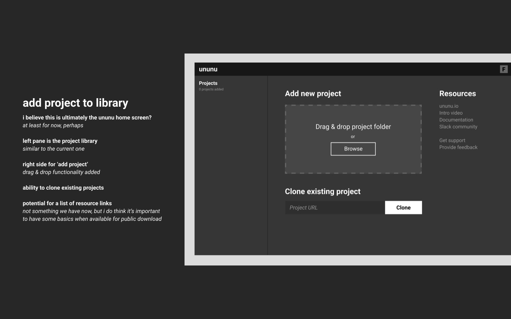
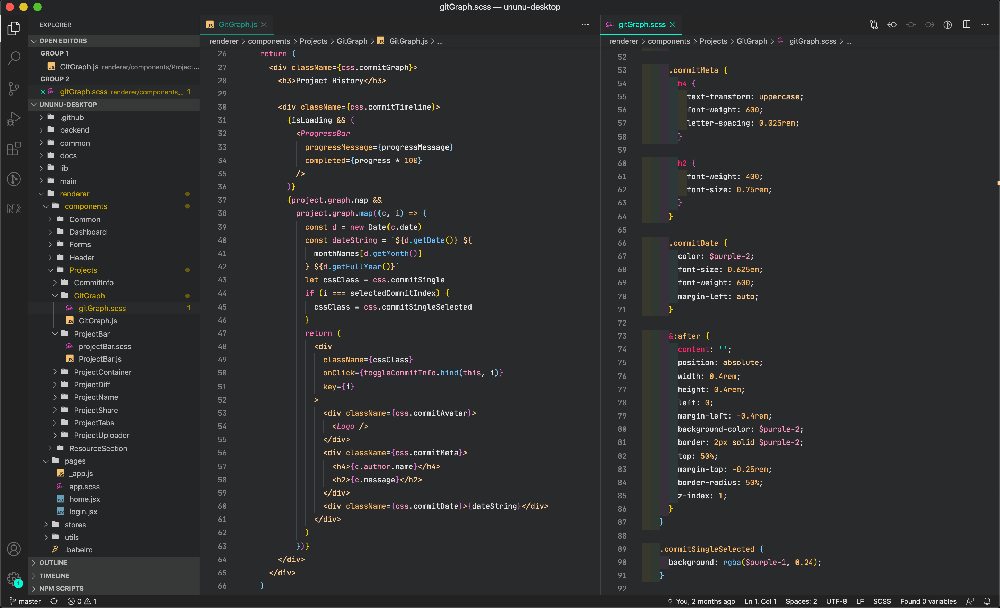

ununu app light/dark modes
overview
01 — problem
02 — role
problem
meeting people is hard. establishing enough rapport to trust somebody with something you've created is even harder. the process of creating music is something so intimate and personal that this problem is amplified tenfold for musicians. the music industry is still designed to favor major labels and corporations, leaving indie musicians around the world without a way to confidently establish themselves and share their story and culture with the world. by creating a ununu, we hoped to create a space for musicians to efficiently and safely share their creation with the world in hopes of finding someone to collaborate with and create something entirely new.
role
as the sole designer on a small team of young developers and musicians from around the world, i was responsible for conducting and synthesizing user research to guide product roadmaps and decision-making, producing all brand, creative, and marketing assets, and both designing and developing the front-end for the ununu desktop app, beta website, and our artist discovery tool, ununu connect.
research & design toolkit

interviews

miro

html + css

user tests

typeform

ab tests
research
01 — overview
02 — interviews
overview
we conducted interviews with artists of all shapes and sizes from around the world. from the swedish grammy-winning oscal folgestrom and acclaimed la-based film composed robert koch to berlin's dj jacky skala and the yukon's singer-songwriter sarah macdougall, i had the chance to get to know lots of talented artists and the challenges they face in managing their creative process and finding others to collaborate with.
interviews
after interviewing some 40 artists, we selected 10+ to work more closely with as our ununu early adopters. these musicians were to create collaborative with our in-house musicians to help us closely monitor performance and bugs of the tool as well as help guide ux and feature decision-making.

ununu research and interviews in notion
synthesis
01 — insights
02 — user journey
insights
in a nutshell, talking to some forty musicians confirmed most of our assumptions, but it also opened our eyes to the way musicians think about each aspect of the collaborative process, and most important for us what their biggest pain points were along the way.
musician pain points
97%
trust
86%
legal
73%
file-sharing
71%
versioning
61%
communication
56%
quality
user journey
there is a lot that happens between deciding to collaborate with another artist and making money from what you've created. even though we'd be focusing on a small aspect of that journey to start, it was important we understand everything a musician is thinking—or not thinking if they aren't aware of something—when embarking on that collaborative creative process.
ununu user journey
branding
01 — define
02 — explore
03 — refine
define
the name 'ununu' is derived from the concept of 'you and you and you' and this idea that music is an inherently collaborative experience that has the power to unite the world in ways that overcome geographic borders, cultural differences, and global conflict. our vision was to be able to connect an artist who grew up with samba in the streets of rio to explore his passion for the thriving berlin electronic scene. the question we begged to answer was 'what could music sound like passed once around the world?'
stefan, ununu founder
-
'i think we're explorers and we want to go places where no-one has ever gone before. you should be protected in a place you've never gone before.'
-
'at the of the day we want to walk in space. make the impossible happen. and for that we need a helmet.'
explore
with that said, it was off to space. i spent a lot more time sketching this particular logo than i have others in the past. something about getting lost and exploring suited the challenge at hand, and it felt like immersing myself in a creative journey of my own—i'm not a musician, so design is all i've got in that respect—would get me closer to our vision.
refine
after sharing final concepts with our early adopters, others musicians, and the builders community over at mozilla, it was decided and the ununu identity was born.
product
01 — wireframe
02 — design
03 — front-end
wireframe
in parallel to establishing that identity, i wireframed our first concept of the ununu app based on all that we'd learned from our interviews and pulled from the research. working in a widely distributed team with backgrounds of all shapes and sizes meant i had to keep things focused on the experience and solving the most important problems.
View full wireframe presentationdesign
after deciding on a direction for our layout and some of the app's core features, a bit of refinement and i was off the applying the newly established ununu brand across the product. tight timelines and sporadic availability across competing timezones forced us into a more guerilla, bootstrapped approach to ununu rather than one where i could take the time to test concept and establish something of a design system. it was a challenge that was as rewarding as it was difficult.
ununu app mockups
ununu connect mobile
front-end
paired with two back-end developers, the majority of the html structure and css styling fell on me. i've always loved handling that sort of front-end work myself and the precision and flexibility with which is enables me to implement my designs and iterate on the fly. this was my first time working on a native app or with electron.js and it was another great learning experience with a satisfying result.
impact
01 — recognition
02 — milestones
recognition
ununu received recognition as a finalist for the 2020 mozilla builder's 'fix-the-internet' spring mvp lab as well as wallifornia music tech accelerator program. ununu is now serving more than 40 musicians around the world who are creating music in a way they haven't been able to until now.